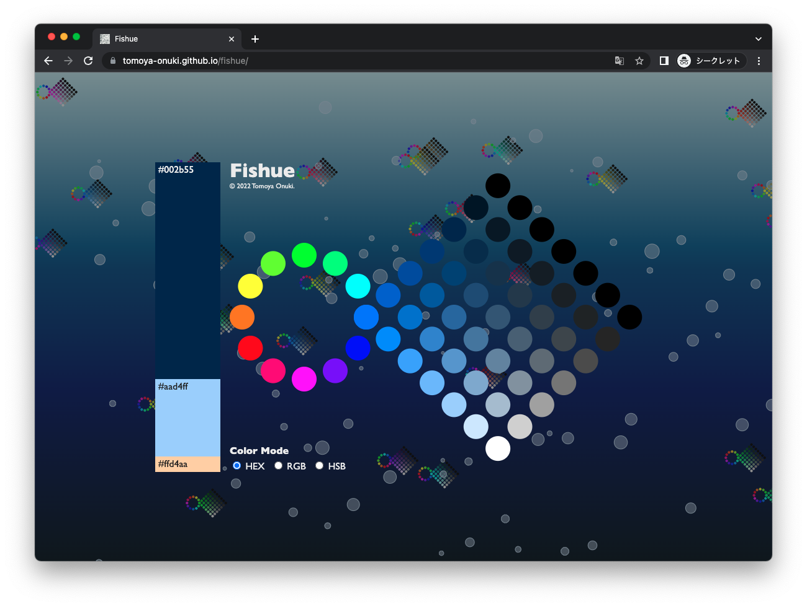

Fishue
2022.12 / WebApplication

「3色のバランス」「同系色の選択」「補色によるハイライト」を重視した配色ツール。
ベースカラーを70%、サブカラーを25%、アクセントカラーを5%程度にしたとき配色全体の評価が良いことが知られていること、色相が似ているほど調和する、彩度が似ているほど調和する、明度が似ていると不調和となる、明度が高いほど調和することを重視した。
Development
TypeScript, D3.js, chroma.js